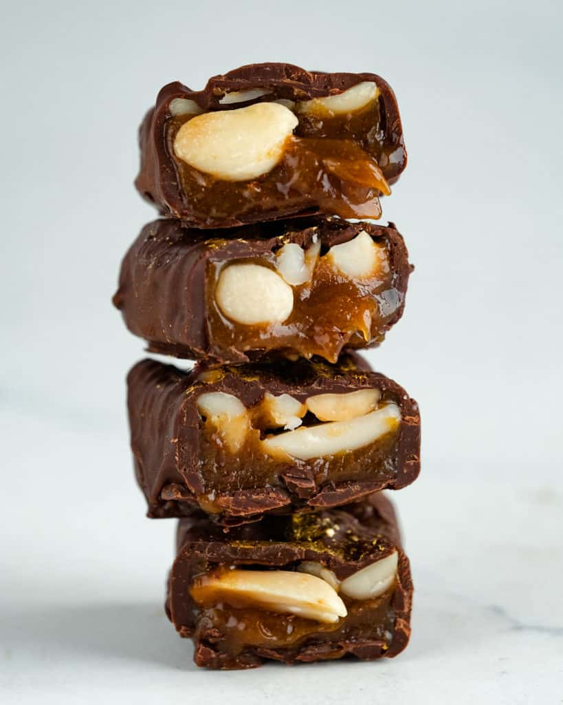

Peanut Butter Snicker Bites

Description:
Delicious chocolate covered in peanut Butter
Ingredients:
- 1 (12 oz. bag) semi-sweet chocolate chips
- 1 tablespoon coconut oil
- 1 cup peanut butter
- 3/4 cup thick caramel sauce or dulce de leche
- 1/2 cup peanuts, roughly chopped
Directions:
- Place chocolate chips in a a microwave safe bowl.
Microwave in 30 second increments, stirring in between, until chocolate is melted and smooth.
Stir in coconut oil until melted and well incorporated.
- Spoon about 1 1/2 teaspoons chocolate each into 12 ice cube molds.
- Place peanut butter in a ziplock bag and pipe about 1 1/2 teaspoons over the chocolate.
Top with the same amount of caramel and divide peanuts evenly over the tops of the caramel.
Top each one with remaining melted chocolate.
- Place ice cube tray in freezer for 4 hours or overnight.